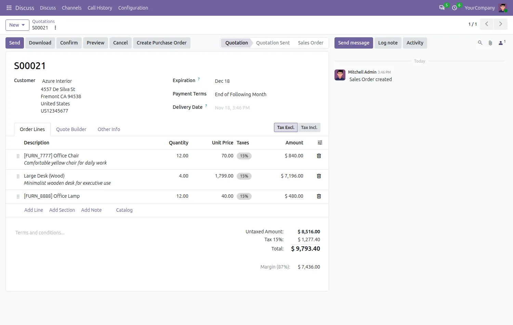
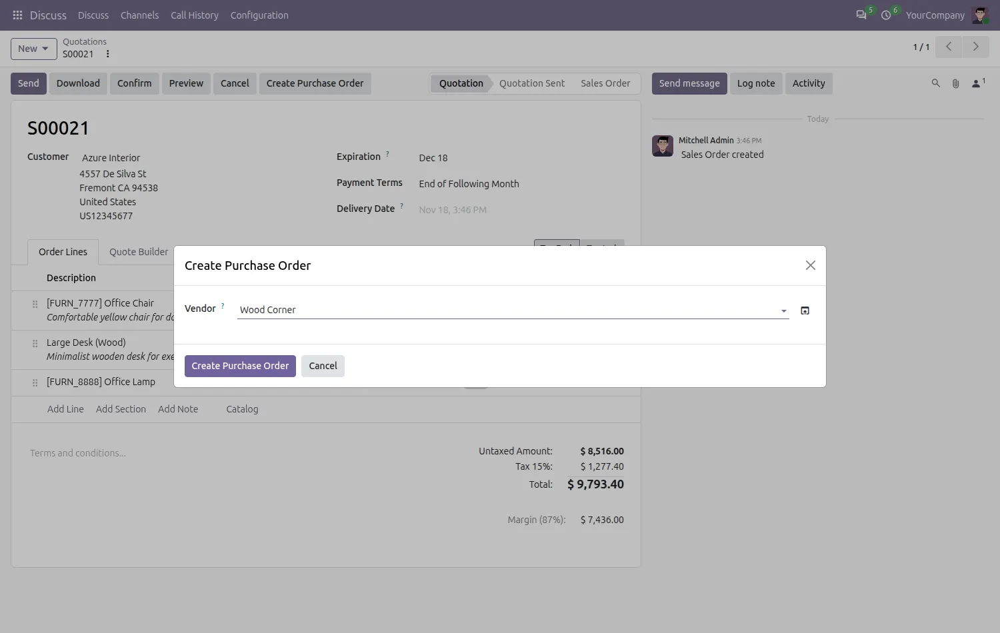

Purchase Order from Sale Order - Create PO in One Click
Create a purchase order from a sale order (PO from SO) in one click: pick a vendor and get a draft PO with the same products and quantities.
- Price
- Free
- Odoo versions
- 16.0
- 17.0
- 18.0
- 19.0
- 20.0
- Technical name
tamadoo_po_from_so- License
- LGPL-3

Text and screenshots below are from the Odoo 20.0 version of this module.
One click to buy what you just sold.
What it does
Adds a Create Purchase Order button to the sale order. Pick a vendor and a draft purchase order is created with the same products and quantities, then opened for you to review — perfect for make-to-order and drop-shipping.
- One button on the sale order.
- Choose the vendor in a quick wizard.
- The PO keeps the sale order as its source document.
How it looks
The button on the sale order

Pick a vendor

Step by step
1. Open the sales order
Open a quotation or sales order and click Create Purchase Order. The button is shown to Purchase users.

2. Choose the vendor
Select the Vendor and click Create Purchase Order.

3. Review the purchase order
A draft purchase order opens with the same products and quantities, priced at product cost, and the sales order as its source document. Adjust it and confirm as usual.
Requirements
- Odoo 16 / 17 / 18 / 19 / 20 — Community or Enterprise.
- Depends on
saleandpurchase.
Tamadoo · tama.odoo@gmail.com
Get Purchase Order from Sale Order
Questions before buying? Write to tama.odoo@gmail.com.